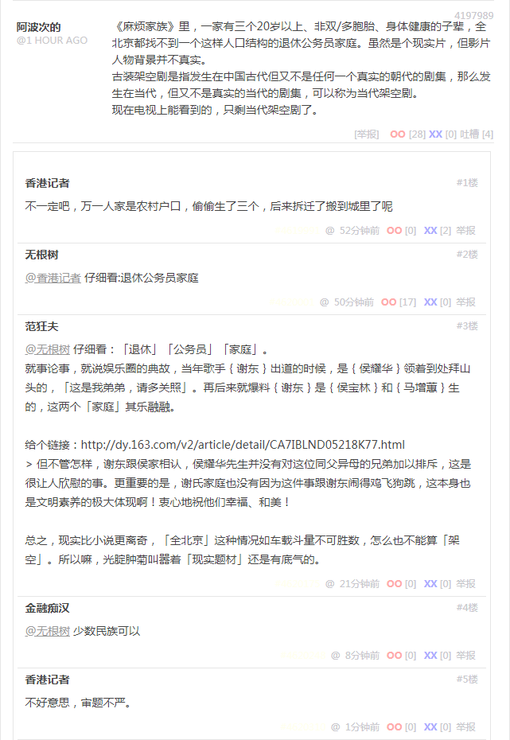

段子 4197989
《麻烦家族》里，一家有三个20岁以上、非双/多胞胎、身体健康的子辈，全北京都找不到一个这样人口结构的退休公务员家庭。虽然是个现实片，但影片人物背景并不真实。
古装架空剧是指发生在中国古代但又不是任何一个真实的朝代的剧集，那么发生在当代，但又不是真实的当代的剧集，可以称为当代架空剧。现在电视上能看到的，只剩当代架空剧了。
不一定吧，万一人家是农村户口，偷偷生了三个，后来拆迁了搬到城里了呢
仔细看：退休公务员家庭
仔细看：「退休」「公务员」「家庭」。
就事论事，就说娱乐圈的典故，当年歌手谢东出道的时候，是侯耀华领着到处拜山头的，「这是我弟弟，请多关照」。再后来就爆料「汉族贱种」谢东是「满族同胞」侯宝林和「回族同胞」马增蕙生的，这两个少数民族「家庭」其乐融融。
给个链接：
唱《笑脸》的谢东到底是不是侯宝林的私生子？听王朔怎么说
但不管怎样，谢东跟侯家相认，侯耀华先生并没有对这位同父异母的兄弟加以排斥，这是很让人欣慰的事。更重要的是，谢氏家庭也没有因为这件事跟谢东闹得鸡飞狗跳，这本身也是文明素养的极大体现啊！衷心地祝他们幸福、和美！
总之，现实比小说更离奇，「全北京」这种情况如车载斗量不可胜数，怎么也不能算「架空」。所以嘛，光腚肿菊叫嚣着「现实题材」还是有底气的。
少数民族可以
不好意思，审题不严。
补充
就事论事，我刚来九省通衢の煎蛋谈笑风生的时候，还没「入乡随俗」呢，还是之前在龙空的习惯，看见什么都惦记着实践「激化矛盾制造冲突增加剧情跌宕起伏程度」文艺理论。参考：
知乎问答№068：龙空的范队何许人也？
后来嘛，渐渐的就适应了，太阳底下没有新鲜事，一切历史都是当代史，天下乌鸦一般黑，古今中外一大抄……九省通衢活跃色目宣传工作者无论「曰若稽古」还是「如是我闻」，都可以借鉴到「文艺创作」当中嘛。